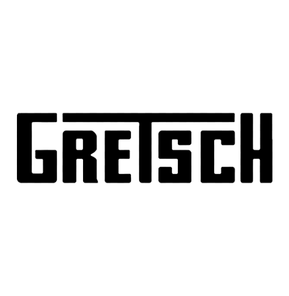

Guitarra Elec Gretsch G5422T Emtc Hlw 2506014567
$6.013.100
$5.712.445
Envío gratis desde $120.000 *Aplica únicamente online
Pide hoy y recibe entre el
25 noviembre al 1 de diciembre
Descripción
Descripción
Sin tonterías, las guitarras de cuerpo hueco Electromatic son los instrumentos Gretsch perfectos, reales, puros y potentes. Son el siguiente paso de Gretsch: audaces, dinámicos y articulados, y diseñados con el sonido, el estilo y la capacidad de interpretación esenciales de Gretsch.
Elegante pero agresivo, el G5422TG tiene una estructura más delgada y completamente hueca con una verdadera voz Filter'Tron ™ que captura el sonido resonante del cuerpo hueco con una voz más presente y tintineante. Como todas las guitarras Electromatic, ofrece la autenticidad intrépida y electrizante que ha distinguido a Gretsch como la guitarra de rock 'n' roll por excelencia desde el principio. Es el sonido del honor en sí mismo: juega con orgullo.
Las características premium incluyen pastillas humbucking dobles TopFilter'tron negras, controles mejorados versátiles que incluyen un circuito de purga de agudos de volumen maestro, orificios en F con bordes de gran tamaño y uniones de cuerpo de múltiples capas envejecidas, cabezal encuadernado G6120 más pequeño de finales de los años 50, tuerca Graph Tech® NuBone ™, incrustaciones de bloques de joroba nacaradas y un cordal de vibrato Bigsby B60.
Especificaciones del producto
Nombre del modelo
G5422TG Electromatic® Hollow Body Double-Cut con Bigsby® y herrajes dorados, Snowcrest White
N.º de modelo
2506014567
País de origen
KR
Color
Snow Crest White
Cuerpo
Arce de 5 capas
Acabado del cuerpo
Brillo
Forma del cuerpo
Cuerpo hueco Electromatic®
Material del mástil
Arce
Acabado del mástil
Uretano brillante
Longitud de escala
24,6 "(625 mm)
Diapasón
Palo de rosa
Radio del diapasón
12 "(305 mm)
Numero de trastes
22
Tamaño de trastes
Jumbo mediano
Tuerca para cuerdas
Graph Tech® TUSQ® XL
Ancho de cejilla
1,6875 "(42,86 mm)
Posición de las incrustaciones
Bloque de joroba perlado
Pastilla para puente
Filtro superior negro'Tron ™
Pastilla para mástil
Filtro superior negro'Tron ™
Controles
Volumen 1 (pastilla del mástil), volumen 2 (pastilla del puente), tono
Interruptor de pastillas
Interruptor de 3 posiciones: Posición 1. Pastilla del puente, Posición 2. Pastillas del puente y del mástil, Posición 3. Pastilla del mástil
Ajuste de pastillas
Filter'Tron ™ / Filter'Tron ™
Puente
Adjusto-Matic ™ con base de palisandro asegurada
Acabado del hardware
Oro
Llaves de afinación
Fundido a presión
Golpeador
Gold Plexi con logotipos Black Gretsch® y Electromatic®
Botones de ajuste
G-Arrow
Cuerdas
Acero niquelado (calibres .011-.049)
Accesorios incluidos
Opcional: 099-6458-000 G2162 Bolsa de transporte; 099-6408-000 Estuche rígido
Medidas
5.70x20.50x45.90 PULG.
Peso
13,20 libras
2023 La Musical